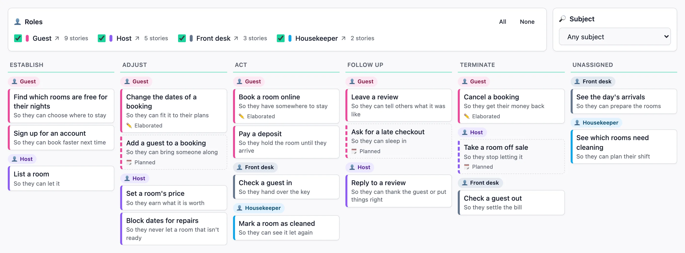
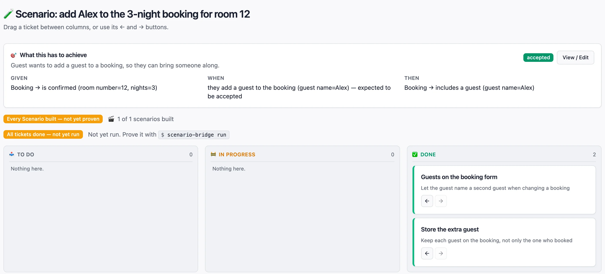

See what’s proven, what’s being built, and why.
Barnspec maps your software by the needs of the people it serves. Build it a slice at a time, and watch each piece turn green only when the real software proves it.

Stories, not tickets.
Every piece of work starts as a sentence anyone can check: who needs something, what they want to do, and what they get from it. Barnspec’s wizard asks you to complete each sentence, so no code or framework knowledge is needed.
The map then lays stories out along the person’s journey, from getting started to finishing up, so gaps are obvious at a glance.
A guest wants to book again from a past stay, so they can come back in a moment.
- book room 101 again for 2 nights from 1 Decemberbuilt, not proven
One word, one meaning, for everyone.
Every person, thing and action in a story is given a meaning in plain words the first time it’s used. From then on, every story and every example uses the same word for the same thing.
Together those words are the business’s own language, kept as a glossary beside the map. Stakeholders, developers and newcomers all read the same meanings, so nobody forgets what “booking” meant.
- guestwho
- choosing and securing somewhere to stay
- bookingthing
- a guest’s hold on a room for a run of nights
- is confirmed: holds the room for the guest on these nights
- has been cancelled: no longer holds the room
Written once, then used word for word in every story, example and test.
A board that can’t be gamed.
Each story is pinned down by concrete examples. Tickets track the work, but moving a ticket to Done never makes anything green. Only a passing run against the real software does, and a later failure turns it red again.
So when Barnspec says a story is fulfilled, it is. Nobody has to take anyone’s word for it.

One slice at a time.
Work happens in slices, which Barnspec calls Phases: small, whole pieces of value, built from end to end. There is the slice being built now and the ones already released. There is no backlog, and nothing to estimate.
When every story in the slice is proven, release it, copy its release notes and start the next. Barnspec refuses to release a slice that isn’t proven, with no way around it.
- returning guests
- tightening bookings
- changing plans
- first bookings